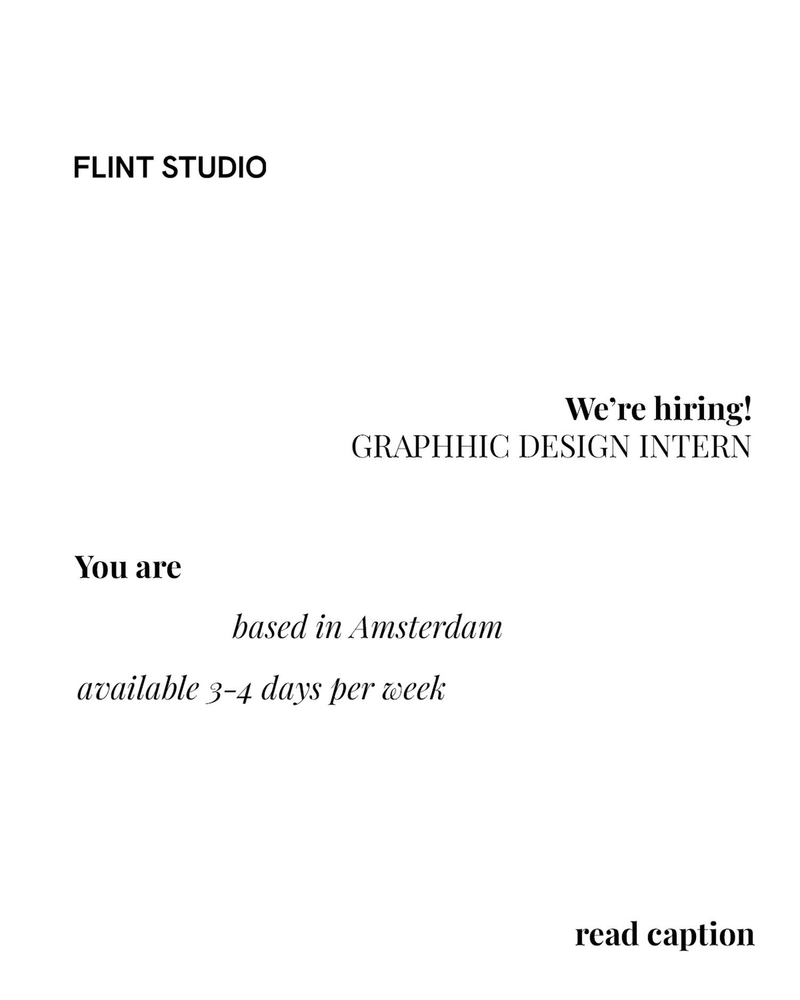

Snapshot & assessment for Maia
Role: Graphic Design Intern
Location: Amsterdam — must be based there
Pattern: 3–4 days per week, on-site expectation implied by the post and studio addresses
Duration: Initial 6-month period
Start: ASAP
Apply: Send CV & portfolio to info@flint-studio.com
Compensation: "Internship compensation"
Source: Direct Instagram post from @flintstudioamsterdam, reviewed 2026-05-20 while the post was 4 hours old
What we know about FLINT Studio
FLINT is a real Amsterdam studio with its own official website at flint-studio.com. The site shows active studio work, a matching contact email, a phone number, and two Amsterdam addresses. That is enough to treat the organisation as verified.
The visible portfolio suggests a fashion/editorial/brand-image studio rather than a pure exhibitions practice. That makes this a slightly sideways opportunity for Maia, but still a potentially useful one because it is hands-on, visual, in-person, and inside a live creative environment.
Verification status
- Organisation: Verified via official site and matching contact details
- Role source: Direct post from the studio's own Instagram account
- Independent careers-page verification: Not established in this pass — the checked website did not surface a separate careers page in the captured review
- Timing: Strong — the Instagram post was only 4 hours old when reviewed
- Fit: Medium-good — strong visual studio, on-site in Europe, but more graphic/social/web than Maia's cleanest exhibition or creative-direction lane, and longer than her ideal 1–3 month window
Role detail (from caption + image)
- Title: Graphic Design Intern
- Location requirement: Must be based in Amsterdam
- Availability: 3–4 days per week
- Start: ASAP
- Duration: Initial 6-month period
- Compensation: Internship compensation
- Tools requested: Figma, Adobe Photoshop, InDesign
- Bonus skill: Video editing; Premiere Pro named as a plus
- Work mentioned: Brand assets, social media, newsletters, websites
- Apply with: CV & portfolio to info@flint-studio.com
Why Maia may care
This is not her cleanest exhibition or cultural-design fit, but it is a real studio, a real current post, and an in-person European opportunity with clear application instructions. If Maia is open to broadening into graphic/editorial/digital studio practice for a period, this is genuinely worth looking at.
The main tradeoffs are the Amsterdam base requirement, the 6-month length, and the fact that the work sounds more studio-production and digital-content oriented than exhibition-led.
Verification log
2026-05-20: Instagram post reviewed directly in browser. Caption explicitly advertised a Graphic Design Intern role, 3–4 days/week in Amsterdam, start ASAP, initial 6-month period, with applications to info@flint-studio.com. Official site checked separately and confirmed a matching email plus physical Amsterdam addresses and phone number. Role remains direct-post verified rather than careers-page verified.
What Maia should do
If Amsterdam is realistic and a 6-month studio internship is acceptable, this is worth a proper look now rather than later because the post is fresh. First step: review the studio's portfolio on its site and Instagram, then decide whether the graphic/social/web emphasis still feels directionally useful.